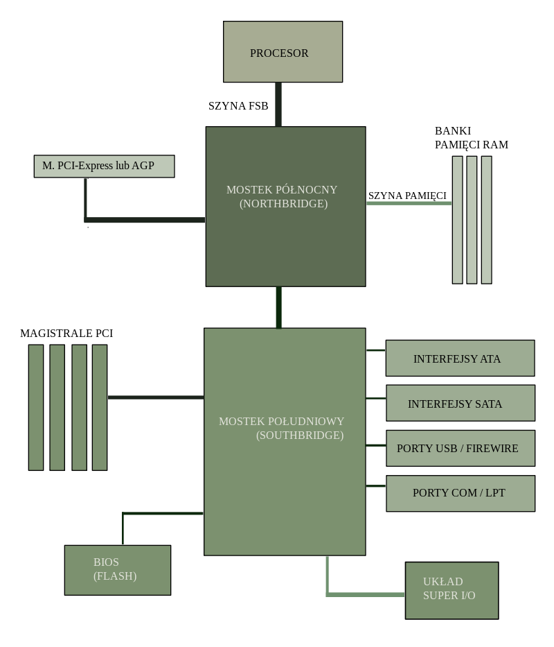

Hejka Kicie! Dziś porozmawiamy o jednym z kluczowych elementów każdego komputera - chipsetach. To układy scalone, które pełnią istotną rolę w koordynacji komunikacji między różnymi podzespołami komputera.
Chipset składa się z dwóch głównych komponentów: mostka północnego odpowiedzialnego za komunikację z procesorem , pamięcią RAM i kartą graficzną GPU oraz mostka południowego zarządzający urządzeniami peryferyjnymi. Ta struktura ma kluczowy wpływ na efektywność przepływu danych w systemie.
Wyróżniamy trzy główne rodzaje chipsetów: zintegrowane, dedykowane i chipsety CPU. Każdy z nich znajduje zastosowanie w różnych rodzajach komputerów, zależnie od ich potrzeb i zastosowań.
Chipsety oferują efektywną komunikację między podzespołami komputera, co przekłada się na wydajność systemu. Ponadto, umożliwiają obsługę najnowszych technologii, co sprawia, że są niezastąpione w dzisiejszych zaawansowanych systemach.
Mimo licznych zalet, chipsety mają swoje ograniczenia. Czasami utrudnione są aktualizacje, a przegrzewanie się podczas intensywnego użytkowania może wpływać na ich wydajność.
Chipsety znajdują swoje miejsce nie tylko w komputerach osobistych, ale również w różnych urządzeniach elektronicznych, od laptopów po telewizory. Pełnią kluczową rolę w poprawie efektywności energetycznej i wydajności systemu.
Chipsety odpowiadają za kontrolę przepływu danych między podzespołami komputera, obsługują interfejsy peryferyjne i wpływają na efektywność energetyczną. Są niezbędne dla sprawnego funkcjonowania komputera.
Ewolucja chipsetów obejmuje ich rozwój od prostych układów do zaawansowanych technologii. Kluczowe kamienie milowe to wprowadzenie standardów takich jak PCI Express czy DDR4.
Najnowsze chipsety Intela oferują zaawansowane technologie, takie jak Intel Optane Memory czy Thunderbolt. Są dostosowane do specyfiki procesorów Intela.
Porównanie chipsetów AMD i Intel. Platforma AMD ma swoje unikalne zalety, co sprawia, że stanowi konkurencję dla chipsetów Intela.
Chipsety graficzne dzielą się na zintegrowane i dedykowane, wpływając na wydajność w grach i aplikacjach graficznych. Czym się różnią i jakie mają zastosowanie?
Ostatnie lata przyniosły wprowadzenie nowych standardów i technologii chipsetów. USB 4.0, PCIe 5.0 - jakie nowości możemy oczekiwać?
Wraz z rozwojem technologii mobilnych, chipsety stają się bardziej energooszczędne i wydajne. Jak są zintegrowane w smartfonach i tabletach?
Bezpieczeństwo chipsetów staje się priorytetem w obliczu zagrożeń cybernetycznych. Jakie mechanizmy zabezpieczeń oferują chipsety?
Konsolowe doznania gier zależą od chipsetów. Jak chipsety wpływają na jakość gier i integrują się z technologią wirtualnej rzeczywistości?
W kontekście zwiększonej świadomości ekologicznej, producenci chipsetów skupiają się na redukcji zużycia energii i wpływie na środowisko. Jak podejście ekologiczne wpływa na rozwój chipsetów?
Przegrzewanie chipsetów i ograniczenia w kompatybilności mogą stanowić wyzwanie dla użytkowników. Jakie są główne problemy związane z chipsetami?
Zestawienie kluczowych informacji o chipsetach. Podkreślenie ich roli w dzisiejszych systemach komputerowych. Co warto zapamiętać na zakończenie naszej podróży po świecie chipsetów?